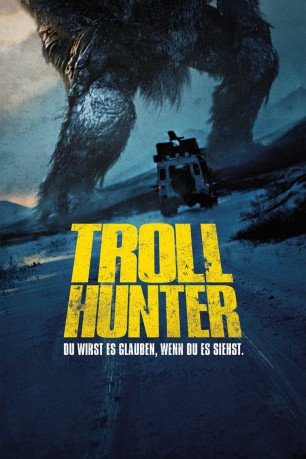

#6341 Trollhunter
 
 IMDB-Wertung: 7.0 / 10
IMDB-Wertung: 7.0 / 10  Metascore: 0
Metascore: 0 
In The Troll Hunter will eine Gruppe von Studenten – bewaffnet mit Kamera und Mikro – einen vermeintlichen Bärenjäger bei seiner Arbeit begleiten, was sich wenig später als reines Himmelfahrtskommando herausstellt. Nicht nur ist Hans, der Jäger, wenig erbaut von seiner Begleitung, auch ist das Objekt seiner Begierde bei weitem größer und gefährlicher als angenommen: Trolle. So erweist es sich von Vorteil, wenn man kein Christ ist – ein Muss auf der Trolljagd, denn Christen besitzen in den Nüstern von Trollen einen ausgeprägten Eigengeruch. In The Troll Hunter erfährt man allerdings noch andere hilfreiche Tipps zum Überleben in Troll-verseuchten Gebieten und eine Unterweisung in der Nomenklatur der mythischen Wesen. Am Ende kommen die Studenten sogar einer staatstragenden Affäre auf die Spur – man hätte es eigentlich riechen müssen, auch wenn man kein Troll ist.
Jahr: 2010
Dauer: 103 Minuten
FSK: 12
Land: Norwegen Studio: Universal PicturesTonspuren:
Untertitel: Deutsch,
Auflösung: 720p (1280x688) Größe: 4474 MB
Genre: Horror, Drama, Fantasy
Regisseur: André Øvredal
Drehbuch: James Algar
Soundtrack:
Darsteller:
- Otto Jespersen als Hans, trolljegeren
- Robin De Lano als Johanna , uncredited
- Glenn Erland Tosterud als Thomas
- Johanna Mørck als Johanna
- Tomas Alf Larsen als Kalle
- Urmila Berg-Domaas als Malica
- Hans Morten Hansen als Finn Haugen
- Robert Stoltenberg als Polsk bjørnejeger
- Knut Nærum als E-verkssjef
- Eirik Bech als Campingplasseier
- Inge Erik Henjesand als
- Tom Jørgensen als Polsk bjørnejeger
- Benedicte Aubert Ringnes als
- Magne Skjævesland als
- Torunn Lødemel Stokkeland als Hilde, veterinär
- Finn Norvald Øvredal als
- Kaja Halden Aarrestad als
- Jens Stoltenberg als Himself - Prime Minister , archive footage, uncredited
Datei: X:\2010(N-Z)\Trollhunter (2010, FSK12, 1280x688).mkv seit 08.06.2017
Festplatte: HD 2010(G-Z)-2011(A-F)
 Es gibt insgesamt 115 Filme in der Gruppe '2010(N-Z)'
Es gibt insgesamt 115 Filme in der Gruppe '2010(N-Z)'